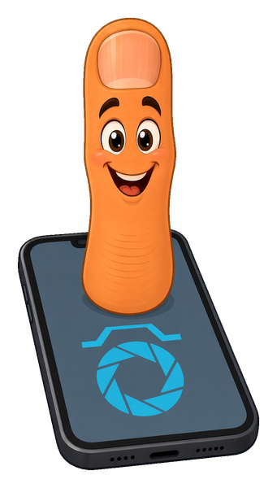
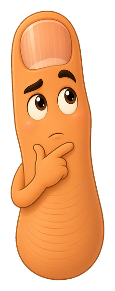
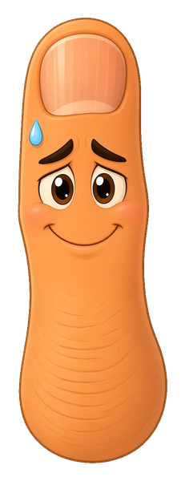
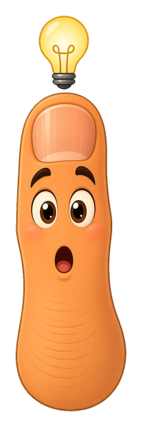

from knowing to building
Chapter 8 said the cabinet exists. This is how you run one.

The first thing I built on Firebase was a buzzer. Two phones, one big button, and whoever taps first wins the round. It held the four questions any shared app has to answer.
Before a tap can count, the database has four jobs to do:
Between jobs 3 and 4 sits the part that makes it feel alive: every phone listening for changes. Each job below has a sandbox. None of them talk to a real server. They run a small model of the rules Firestore follows, so you can break things safely.
job 1 · who is asking
Sign-in is a name tag
A database on the open internet gets requests from anyone. To decide anything, it first needs to know who sent this one. Signing in is how a device gets a name tag, called a uid (user ID), a long random string. After that, the tag rides along on every read and write.
Start with two kinds. Anonymous sign-in hands this browser on this device a tag with no name, no email and no password. It is enough for a buzzer. Email and password makes an account, so the same person gets the same tag on every device they own.
how do the devices sign in?

Nobody typed anything, and it is still real sign-in. The database can now tell this phone from that one, and that is all a buzzer needs. When the same person has to be recognized on a second device, you have outgrown it.
job 2 · where it sits
Folders hold pages. Pages hold facts.
Firestore has exactly two kinds of container, and they always take turns. A collection is a folder. A document is one page inside it, holding named facts called fields. A page can hold more folders, and so on down.
Every piece of data has an address, a path, that reads folder, page, folder, page. The whole buzzer lived at buzz/room: one folder, one page, two fields. Build some paths below and watch the pattern.
job 3 · are they allowed
The rules are the lock. Nothing else is.
Chapter 8 said the config block in your page is not a password. The only thing standing between a stranger and your data is a short file of security rules that lives on the database itself. Every request is checked against it: this name tag, this path, read or write. Yes or no.
Pick a rule, pick who is knocking, and read the verdict.
the rule on the cabinet
who is knocking

A path no rule covers is denied. Rules that check the shape of a write also refuse a shape they do not list. So when you add a new kind of data and the save fails, look at the rules first. That is the lock doing its job, and now it needs to learn the new thing.
the live part
Asking once is a photo. Listening is a phone call.
There are two ways to read. Ask once (getDoc) and you get the page as it was at that instant, then nothing. Listen (onSnapshot) and the database calls you back every time the page changes, for as long as the app is open.
Set how the tablet reads, then send from the phone.
how the tablet reads
job 4 · who was first
Two taps in the same instant
Each phone does the obvious thing: read the page, see no winner yet, write its own name. When two phones do that in the same split second, both read "no winner" before either has written. Then both write. The slower write lands on top of the faster one and the wrong phone wins.
The fix is a transaction. It means: read, decide, and write as one move, and if the page changed while I was deciding, throw my answer away and start again. Firestore does the rerun for you (up to five tries), and it needs a connection. Run it both ways. Phone 1 is always a hair faster.

When a round ends, both phones notice and both try to add the point. Inside a transaction, each one first checks a field that records which round was already scored. The second phone sees it is done and writes nothing. One round, one point, no matter how many phones were watching.
missions
Prove it
Six things to make happen in the sandboxes above. They tick off as you go.
the gym
Practice: call it before the database does
Randomized yes or no drills. Each one is answered by the same model the sandboxes run on. A wrong call resets your streak, because this gym tests the mental model.
quiz